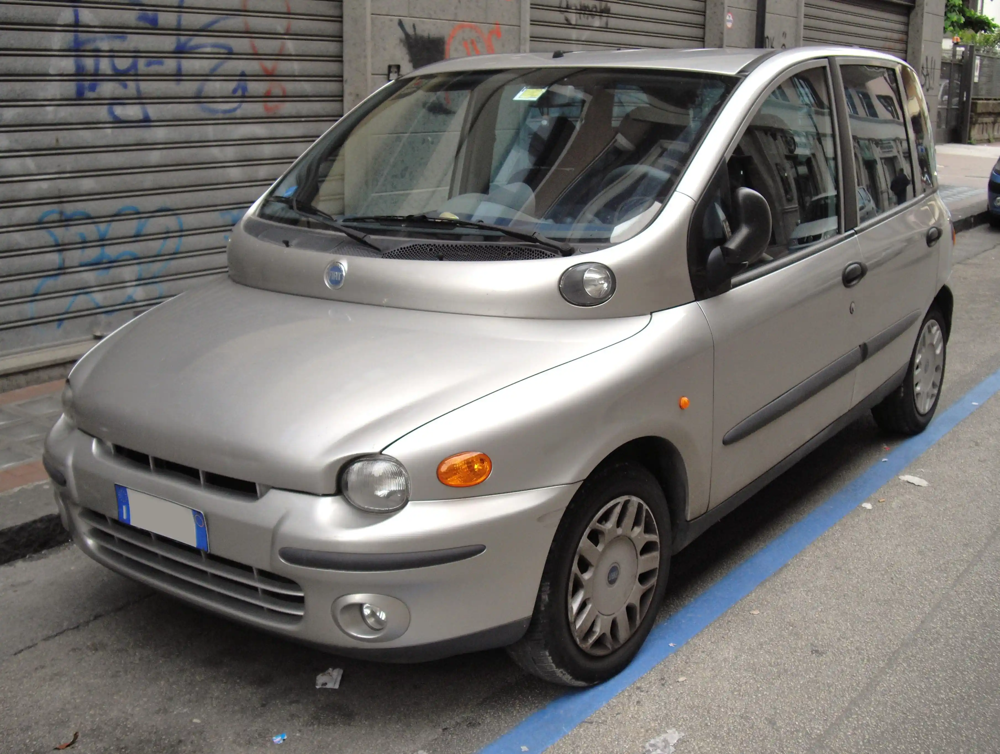

Fiat Multipla (1998)
Categoría: Diseño controvertido
El Fiat Multipla es considerado por muchos el coche más feo jamás fabricado debido a su peculiar "escalón" con luces debajo del parabrisas.
A pesar de su estética, el interior contaba con 6 plazas distribuidas en 2 filas de 3 asientos, algo bastante práctico pero que no logró salvar sus ventas.
Lanzado en Italia a finales de 1998 y diseñado por Roberto Giolito, fue tan polémico que incluso llegó a exponerse en el Museo de Arte Moderno (MoMA) de Nueva York como ejemplo de innovación en el aprovechamiento del espacio interior.
Precio de lanzamiento aproximado: 18.000€ ¡Se vendía de oferta por falta de demanda!
